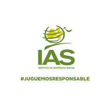

Funciones del IAS
-La finalidad del Instituto de Asistencia Social de la Provincia de Formosa es maximizar las utilidades, bajo una administración transparente y eficaz para contribuir a la acción social de toda la provincia.
-
1. Regulación y control de juegos de azar en la provincia
El IAS establece las normativas, leyes y reglamentos que rigen todas las actividades de apuestas y juegos de azar dentro del territorio provincial. Su función es fiscalizar el cumplimiento de estas reglas para garantizar un entorno de juego legal, seguro y transparente para todos los ciudadanos
-
2. Fiscalización de salas de juego y casinos
Realiza inspecciones y auditorías permanentes en todos los establecimientos físicos para asegurar que los sorteos sean legales y que los sistemas de apuestas funcionen correctamente sin fraudes.
-
3. Otorgamiento de licencias y habilitaciones
Gestiona y entrega los permisos oficiales necesarios para que las agencias de quiniela y salas de juegos puedan operar legalmente, verificando que cumplan con todos los requisitos impositivos y de seguridad.
-
4. Programas de juego responsable
Implementa campañas de concientización y sistemas de autoexclusión para ayudar a los apostadores a mantener el juego como una actividad recreativa, brindando contención y herramientas para evitar la ludopatía.
-
5. Destino de fondos para programas sociales
Administra y deriva los recursos económicos generados por la recaudación de los juegos hacia el Ministerio de Desarrollo Humano y otras áreas, financiando hospitales, escuelas y asistencia directa a la comunidad formoseña.
Compromiso con la Responsabilidad Social
- -Prevención de ludopatía
- -Promoción del juego responsable
- -Protección de menores
- -Apoyo a programas comunitarios
- -Transparencia en la gestión
Accion social
